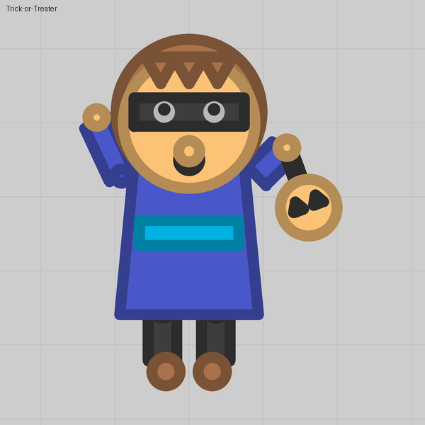

Lesson 01
A face that keeps the team colour
Paint anything you like over the body, as long as the body itself stays on Team color and shows through somewhere.
What you see
A yellow face with eyes, a smile and blue cheeks. Enemies see the same face with red cheeks. That is the whole point: in team modes players must be able to tell whose tank is whose, and the rule we hold every tank to is a team-coloured area on every tank, and every damaging shot in the team colour.
The trick
The body is the only thing the game colours for you. Leave it on Team color, then cover it with a part of exactly the same size placed over the body, and draw the face on top of that. Anything you set to Same color as the body then follows the team too: the cheeks here, a collar, a hat band, the lining of a cape.
Numbers that matter
| Thing | Value | Why |
|---|---|---|
| Cover part | Size = Body size, over the body | A round body is drawn at its Body size; a polygon body at 1.3 × that, so a polygon cover needs Size × 1.3 |
| Team accents | Same color as the body | They take the hull's colour, which is the team colour only while the hull is on Team color |
| Shots | leave the projectile's colour unset | Team colour for free |
Gotchas
- The cover must be over the body (above the Tank body row). Under it, the body paints over it and you see plain blue.
- If you give the body a colour of its own, nothing follows the team any more, including Same-color parts. Cover it instead.
- A figure that must be a fixed colour (a black cat, a white ghost) still needs a team spot somewhere: a collar, the eyes, a bubble.
Where we used it
